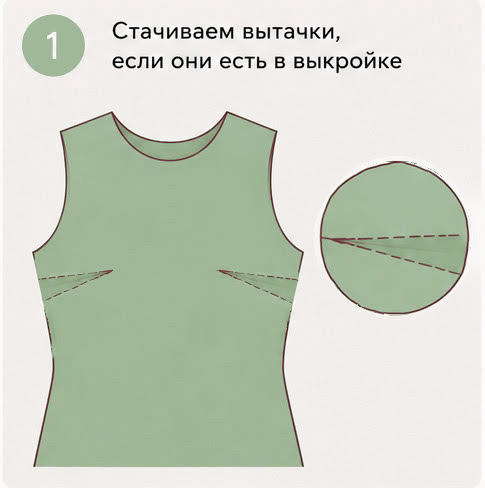
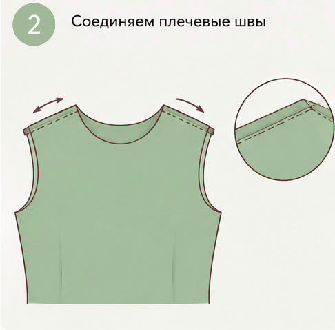
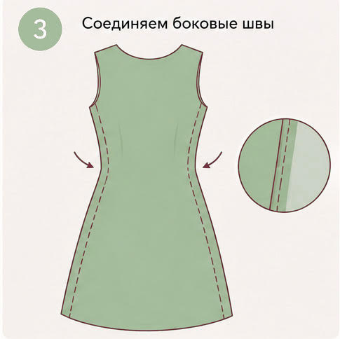
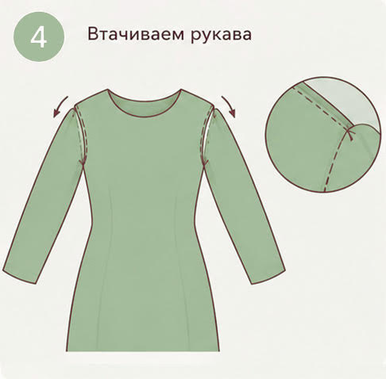
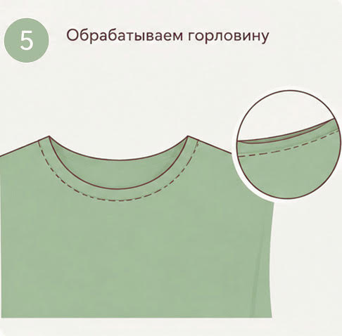
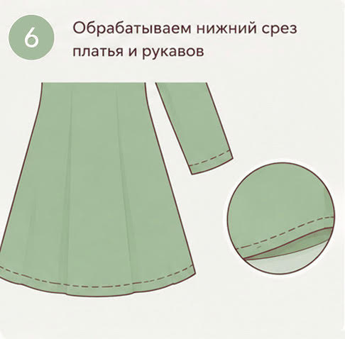
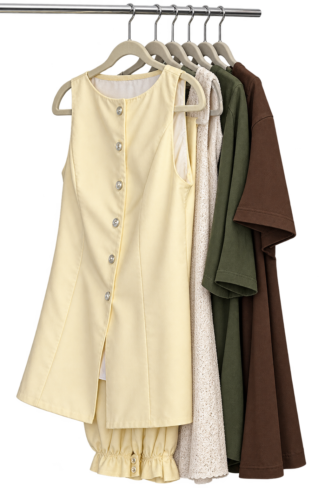

Семь раз отмерь — один отрежь
Если берёте готовую выкройку, внимательно изучите размерную сетку и снимите все нужные мерки. Выкройки платьев, блузки или футболки выбираются по обхвату груди, брюк и юбок — по обхвату бёдер. Размер, который вы обычно покупаете в магазине, — плохой ориентир.
Не начинайте с капризной ткани
Возможность шить самостоятельно приближает нас к вещам мечты. Но если вы только начинаете, струящееся платье из шёлка лучше оставить на потом: скользкая ткань требует опыта и терпения.
Сначала попробуйте на макете
Если страшно испортить ткань, сшейте пробную версию из более дешёвого материала. Для этого часто выбирают суровую бязь. Макет поможет отработать строчки, проверить посадку и понять последовательность работы до раскроя основной ткани.
Шаг 4. Сшить первую вещь
Начинать лучше с простых вещей — тех, в которых нет потайных молний, карманов с листочкой или шлицы и на пошив которой на старте можно заложить около восьми часов. Например, футболка, свитшот, платье простого кроя или трикотажные брюки на резинке.
Вот как отрез ткани превращается в платье для офиса. Это не универсальная инструкция для любой модели, а пример последовательности операций — точный порядок зависит от выкройки.






Шаг 5. Нырнуть в море возможностей
Когда поймете принцип, можно переходить к вещам с более сложными элементами: воротниками, молниями, карманамами. По большому счету, это все еще пазл, который усложняется от количества деталей.
Я покупала машинку со скепсисом: в интернете увидела рекламу онлайн-курса по нижнему белью, решила попробовать. С тем курсом не сложилось, его бросила после трех уроков. Но в сам пошив влюбилась. Для меня это идеальное хобби, в котором сочетается и творчество, и практическое применение.
Сейчас я могу сшить себе платье, брюки, тренчкот или пуховик. Я научилась выбирать ткани, корректировать посадку готовых лекал под свои особенности фигуры и делать несложное моделирование. У меня есть целый шкаф с тканями на будущее и список идей для пошива на два листа А4. Это хобби не позволяет мне экономить на одежде. Но решает проблему с комфортом: между верхом и низом у меня разница два размера, поэтому даже не знаю, как я раньше что-то покупала в магазинах. А еще я пошив снижает мою тревожность: его точно не заменит ИИ, а значит, может быть, и я приду к монетизации хобби.
- Магазины продают плюс/минус стандартное: на фигуру по ГОСТу, по схожим трендам. А вы сошьете под себя - по своим меркам и именно как хотите вы, с перламутровыми пуговицами.
- На этом можно зарабатывать: шить на заказ или вести свой швейный блог.
- Кастомизировать те вещи, которые у вас есть.
